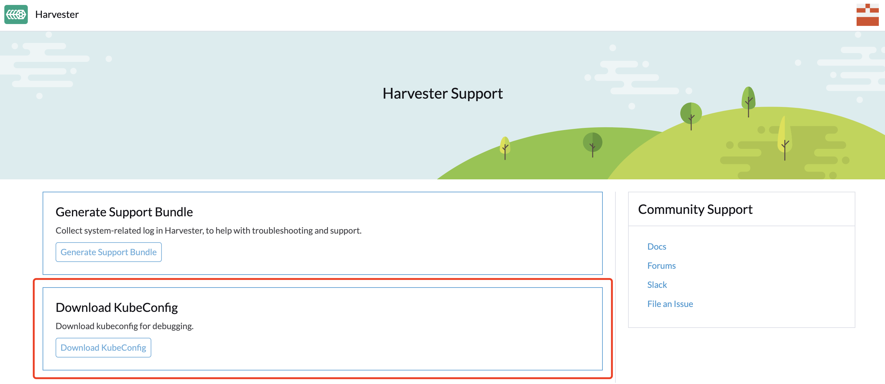

FAQ
This FAQ is a work in progress designed to answer the questions our users most frequently ask about Harvester.
What is the default login username and password of the Harvester dashboard?
username: admin
password: # you will be promoted to set the default password when logging in for the first timeHow can I access the kubeconfig file of the Harvester cluster?
Option 1. You can download the kubeconfig file from the support page of the Harvester dashboard.

Option 2. You can get the kubeconfig file from one of the Harvester management nodes. E.g.,
$ sudo su
$ cat /etc/rancher/rke2/rke2.yamlHow to install the qemu-guest-agent of a running VM?
# cloud-init will only be executed once, reboot it after add the cloud-init config with the following command.
$ cloud-init clean --logs --rebootHow can I reset the administrator password?
In case you forget the administrator password, you can reset it via the command line. SSH to one of the management node and run the following command:
# switch to root and run
$ kubectl -n cattle-system exec $(kubectl --kubeconfig $KUBECONFIG -n cattle-system get pods -l app=rancher --no-headers | head -1 | awk '{ print $1 }') -c rancher -- reset-password
New password for default administrator (user-xxxxx):
<new_password>I added an additional disk with partitions. Why is it not getting detected?
As of Harvester v1.0.2, we no longer support adding additional partitioned disks, so be sure to delete all partitions first (e.g., using fdisk).
Why are there some Harvester pods that become ErrImagePull/ImagePullBackOff?
This is likely because your Harvester cluster is an air-gapped setup, and some pre-loaded container images are missing. Kubernetes has a mechanism that does garbage collection against bloated image stores. When the partition which stores container images is over 85% full, kubelet tries to prune the images based on the last time they were used, starting with the oldest, until the occupancy is lower than 80%. These numbers (85% and 80%) are default High/Low thresholds that come with Kubernetes.
To recover from this state, do one of the following depending on the cluster’s configuration:
-
Pull the missing images from sources outside of the cluster (if it’s an air-gapped environment, you might need to set up an HTTP proxy beforehand).
-
Manually import the images from the Harvester ISO image.
Take v1.1.2 as an example, download the Harvester ISO image from the official URL. Then extract the image list from the ISO image to decide which image tarball we’re going to import. For instance, we want to import the missing container image
rancher/harvester-upgrade$ curl -sfL https://releases.rancher.com/harvester/v1.1.2/harvester-v1.1.2-amd64.iso -o harvester.iso $ xorriso -osirrox on -indev harvester.iso -extract /bundle/harvester/images-lists images-lists $ grep -R "rancher/harvester-upgrade" images-lists/ images-lists/harvester-images-v1.1.2.txt:docker.io/rancher/harvester-upgrade:v1.1.2Find out the location of the image tarball, and extract it from the ISO image. Decompress the extracted zstd image tarball.
$ xorriso -osirrox on -indev harvester.iso -extract /bundle/harvester/images/harvester-images-v1.1.2.tar.zst harvester.tar.zst $ zstd -d --rm harvester.tar.zstUpload the image tarball to the Harvester nodes that need recover. Finally, execute the following command to import the container images on each of them.
$ ctr -n k8s.io images import harvester.tar $ rm harvester.tar -
Find the missing images on that node from the other nodes, then export the images from the node where the images still exist and import them on the missing node.
To prevent this from happening, we recommend cleaning up unused container images from the previous version after each successful Harvester upgrade if the image store disk space is stressed. We provided a harv-purge-images script that makes cleaning up disk space easy, especially for container image storage. The script has to be executed on each Harvester node. For example, if the cluster was originally in v1.1.2, and now it gets upgraded to v1.2.0, you can do the following to discard the container images that are only used in v1.1.2 but no longer needed in v1.2.0:
# on each node
$ ./harv-purge-images.sh v1.1.2 v1.2.0
|